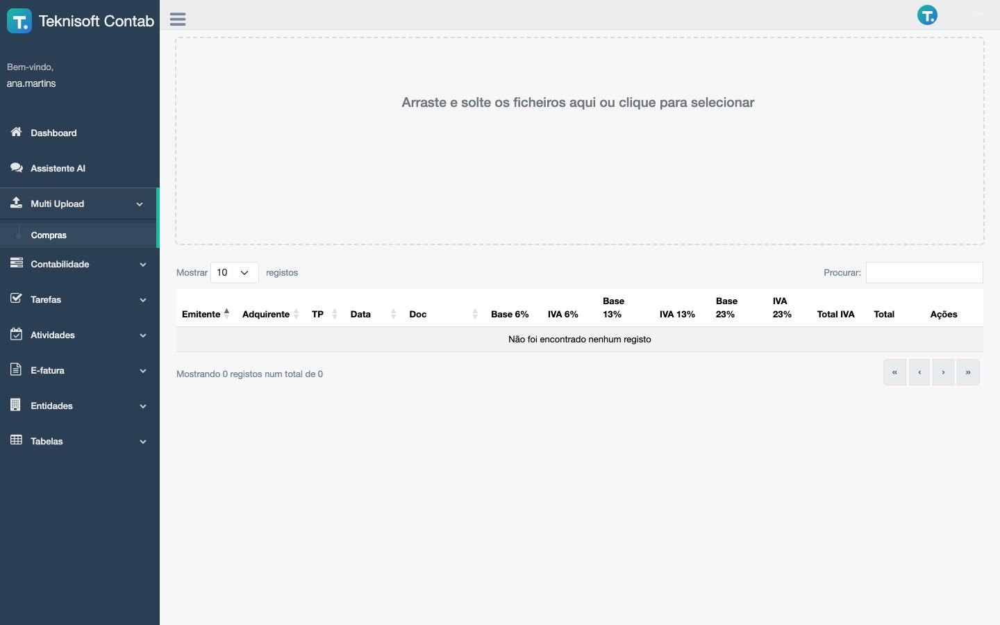
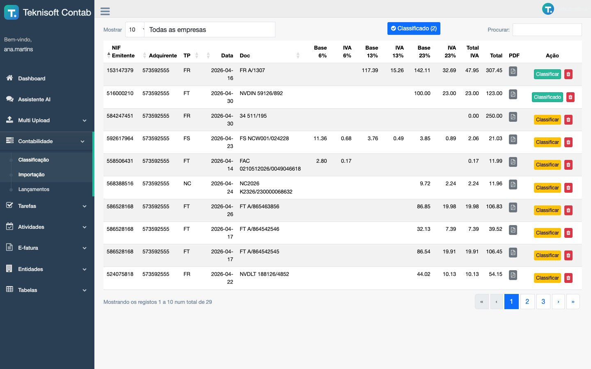
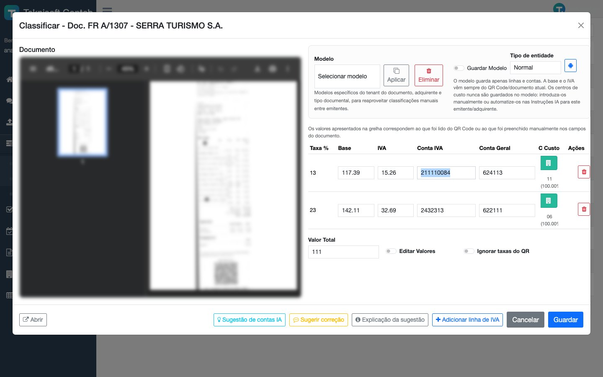
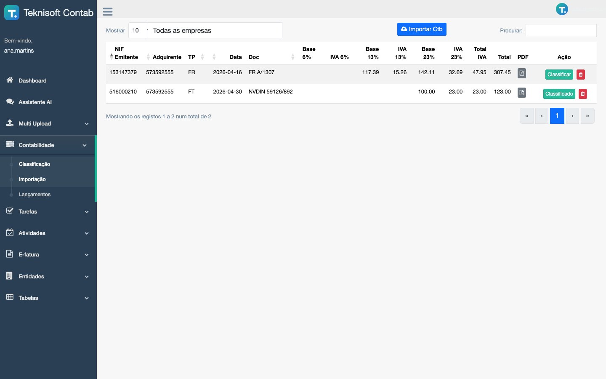
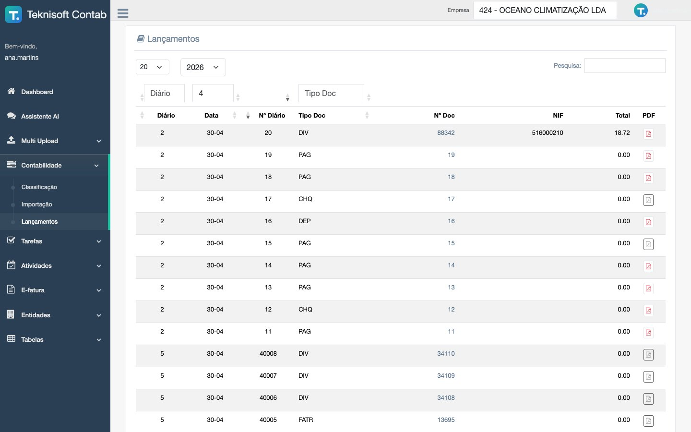

Contabilidade: do documento ao ERP
O módulo mais crítico da aplicação. Aqui a fatura do fornecedor é carregada, lida, classificada e lançada na contabilidade do cliente, com o PDF anexado ao movimento no ERP.
Passo 1 · Multi Upload
Menu Multi Upload > Compras (permissão Compras -> Upload).

- Arraste os ficheiros (vários de uma vez) para a zona tracejada, ou use Usar câmara no telemóvel para fotografar o documento.
- Para cada ficheiro, o sistema procura o código QR fiscal em todas as páginas e extrai emitente, adquirente, tipo e número do documento, data, ATCUD e bases/IVA por taxa.
- Se o QR não for legível, use Selecionar zona do QR Code e Ler QR selecionado, ou deixe o OCR completar os dados.
- O adquirente (cliente do gabinete) é reconhecido pelo NIF; em caso de dúvida, o OCR sugere a empresa e pode escolher em Selecionar empresa...
- Confirme e o documento passa à Classificação. Ignorar ficheiro descarta-o.
Regras de leitura automáticas
- Um PDF, várias faturas: todas as faturas (FT/FR) encontradas no mesmo ficheiro são preservadas como documentos separados.
- Fatura + recibo no mesmo PDF: os recibos (RC/RG) são ocultados; a informação de que a fatura já está paga é guardada e usada para sugerir a conta de valor total (banco/caixa em vez de fornecedor).
- Ligação ao E-fatura: o documento é emparelhado automaticamente com o registo correspondente do portal E-fatura (por ATCUD, NIF e número), servindo de confirmação cruzada.
- Duplicados: um documento já carregado ou já lançado no ERP é assinalado.
Passo 2 · Classificação
Menu Contabilidade > Classificação (permissão CTB Classificacao Docs). Lista todos os documentos pendentes dos clientes da sua carteira.

| Elemento | Significado |
|---|---|
| Classificar | Faltam contas. Abre o modal de classificação. |
| Classificado | Documento pronto (verde): todas as taxas têm conta geral, conta de IVA (quando aplicável) e conta de valor total. |
| Classificado (N) | Importa diretamente para o ERP os N documentos verdes selecionados, mesmo de clientes diferentes. |
| Todas as empresas | Filtra por cliente. |
| PDF / 🗑 | Abre o documento original / remove o documento da lista. |
Quando o fornecedor e o cliente já são conhecidos, o motor de classificação preenche as contas sozinho e a linha aparece logo como Classificado. O técnico só abre o modal para rever ou corrigir. Ver Motor de classificação.
O modal Classificar

| Zona | Para que serve |
|---|---|
| Documento | Pré-visualização do PDF com zoom, rotação e páginas. Botão Abrir para nova janela. |
| Modelo | Selecionar modelo / Aplicar / Eliminar modelos de classificação guardados; Guardar Modelo grava a classificação atual como modelo reutilizável. |
| Tipo de entidade | Normal, Banco ou Seguradora. Muda as regras aplicadas (por exemplo, empréstimos com capital/juros/comissões, ou seguros com imposto do selo). |
| Linhas por taxa | Taxa %, Base, IVA, Conta IVA, Conta Geral e C. Custo (distribuição por centros de custo em percentagem ou valor). |
| Valor Total | Conta da contrapartida: fornecedor (22...), ou banco/caixa (12.../11...) se a fatura já vem paga. Para fornecedores novos aparece "Conta fornecedor: criada na importação". |
| Editar Valores | Permite corrigir bases e IVA quando o QR está errado ou incompleto. |
| Ignorar taxas do QR | Substitui as taxas lidas por linhas definidas manualmente ou pelo modelo. |
| Auto-liquidação | Para operações com inversão do sujeito passivo: escolhe se o IVA autoliquidado é dedutível e as contas de IVA dedutível / não dedutível. |
Botões do modal
| Botão | Ação |
|---|---|
| Sugestão de contas IA | Recalcula a proposta de contas com todas as fontes (histórico, regras, ERP, instruções e IA). |
| Sugerir correção | Ensina ao sistema uma regra a partir deste caso (fica memorizada para o tipo de entidade). |
| Explicação da sugestão | Mostra, por taxa, de onde veio cada conta e com que evidência. |
| Instruções IA (🤖) | Regras personalizadas para este fornecedor e este cliente. |
| Adicionar linha de IVA | Acrescenta uma linha (por exemplo, uma taxa que o QR não trouxe). |
| Guardar | Grava a classificação. É este gesto que ensina o sistema para os próximos documentos. |
Regras contabilísticas aplicadas automaticamente
- Taxa 0%: a conta de IVA fica vazia e o documento pode ficar verde.
- Cliente isento (art. 9.º): não pede conta de IVA; base + IVA vão para a conta geral.
- Combustíveis: nas rubricas configuradas (por exemplo "GASÓLEO 50%"), aplica-se a dedução parcial do IVA.
- Notas de crédito (NC): invertem a natureza débito/crédito e preservam a linha de valor total.
- FR/FTR: tratados como FT para obter a parametrização contabilística no ERP.
- Data do lançamento: data do documento ou último dia do mês, conforme Módulos.
Passo 3 · Importação
Menu Contabilidade > Importação (permissão CTB Importar Docs). Mostra só os documentos prontos (verdes).

- Selecione os documentos (pode misturar clientes).
- Clique em Importar Ctb.
- O sistema agrupa por base ERP de cada cliente, valida as contas no plano de contas do ERP e envia os lançamentos com o PDF anexado.
- No fim mostra, por documento, o número de diário atribuído ou o motivo da recusa.
Se a fatura for a crédito e o fornecedor ainda não tiver conta 22 no ERP, a importação cria-a automaticamente (ou reutiliza uma já existente com o mesmo NIF) antes de lançar.
Se o documento já existir no ERP, a importação não o repete e indica onde está: exercício, diário, mês e número de diário.
Um gabinete pode separar quem classifica de quem importa: dando só CTB Classificacao Docs a uns técnicos e CTB Importar Docs a outros, cria-se um passo de revisão antes de os lançamentos entrarem no ERP.
Passo 4 · Lançamentos
Menu Contabilidade > Lançamentos (permissão CTB Lancamentos - Aceder). Consulta em tempo real os movimentos existentes no ERP do cliente escolhido no topo (Empresa).

- Filtre por exercício, diário, mês e tipo de documento; pesquise por número ou NIF.
- Abra um lançamento para ver ou corrigir as linhas; ao fechar, a grelha é atualizada a partir do ERP.
- Eliminar um lançamento remove primeiro os anexos digitais; se isso falhar, o lançamento não é eliminado (nunca fica um movimento sem o documento ou vice-versa).
Importação de compras
Com o módulo Compras ativo, Contabilidade > Importação de Compras oferece o mesmo fluxo para documentos de compras de mercadoria, com a sua própria lista e importação.